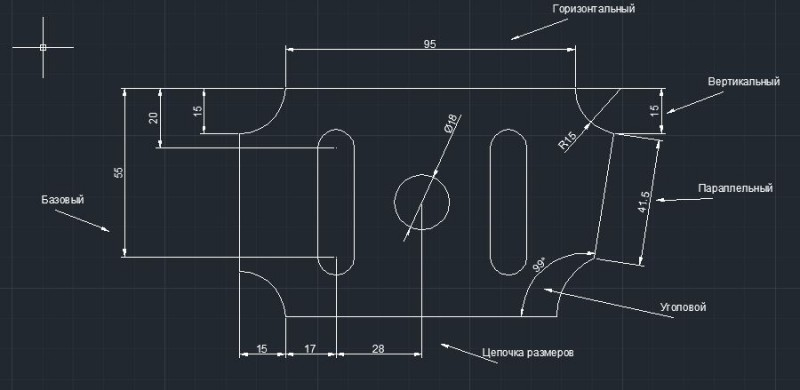
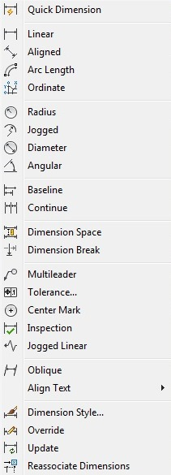
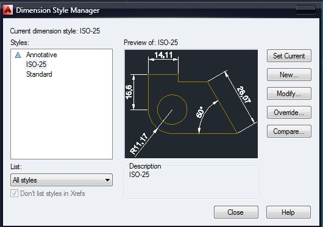
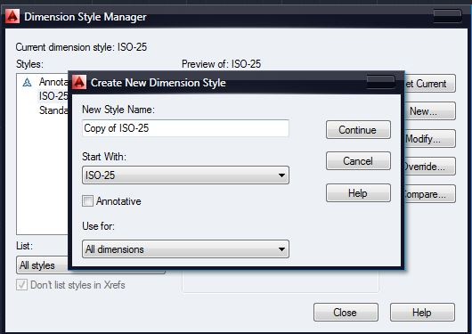
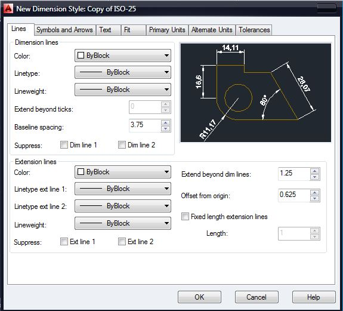
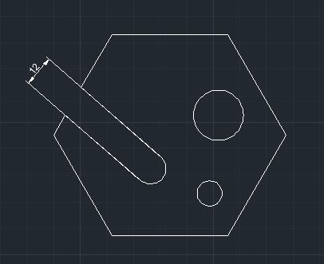
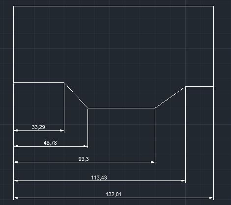
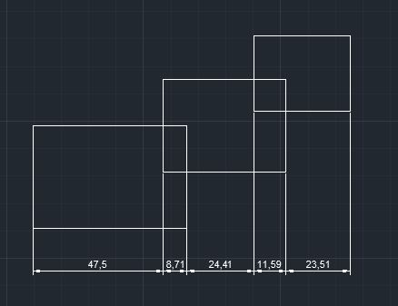
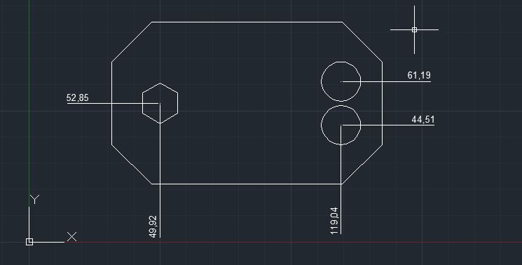

Лекция 7:Нанесение размеров в AutoCAD
Чертеж детали неприемлем без нанесенных на него размеров. Размеры должны полностью определять величину изделия. Их должно быть достаточное количество, но лишних размеров наносить также не нужно.
Размеры на чертеже могут быть линейные, угловые, радиальные. А так же советую почитать статью «Три типа размеров в AutoCAD» Линейные размеры определяют длину, ширину, высоту изделия и указываются в миллиметрах без обозначения единицы измерения. Угловые размеры измеряются в градусах, минутах, секундах с обозначением единицы измерения. Радиальные размеры указывают длину радиусов или диаметров дуг и кругов. Размер состоит из:
Выносных линий, проведенных перпендикулярно отрезку, которые измеряется. Выносные линии угловых размеров проводят радиально, а при нанесении размера дуги — перпендикулярно ее хорде или радиально .
Размерных линий, проведенных параллельно отрезку, размер которого определяется на расстоянии не менее 10 мм от контура детали. Концы размерных линий ограничиваются стрелками насечками или точками. Выносные линии выходят за размерные на 1 — 5 мм. При нанесении нескольких параллельных размерных линий ближе к контуру наносится меньший размер. Размерными линиями угловых размеров являются дуги с центром в вершине угла или дуги.
Размерных чисел, которые указывают величину изделия.
В зависимости от изделия и ориентации выносных линий размеры могут быть горизонтальными, вертикальными, параллельными, повернутыми, ординатными. Можно проставлять размеры от общей базы и образовывать размерные цепочки.
Нанесение размеров можно выполнить одним из двух методов. Первый состоит в том, что после введения команды курсором мышки указывается объект, размер которого измеряется и задается положение размерной линии. При использовании второго метода курсором мышки указываются начальные точки выносных линий и положение размерной линии. В последнем случае рекомендуется включить режим объектной привязки.
Варианты нанесения размеров или их редактирования содержатся в команде меню Dimension, а также в виде кнопок на панели Dimension.
AutoCAD создает ассоциативные размеры. Ассоциативность заключается в том, что при изменении объектов командами редактирования элементы размеров автоматически обновляются.
Вид размера на чертеже зависит от выбранного стиля. По умолчанию предлагается стиль ISO-25, предназначенный для машиностроительного черчения. AutoCAD предоставляет возможность вносить изменения в существующие стили, а также создавать собственные стили. От выбранного размерного стиля зависит отображения выносных линий, размер и положение текста, длина и тип стрелок, базовый интервал между размерными линиями и т. и др. Руководят процессом нанесения размеров размерные переменные, значения которых можно изменить при помощи соответствующими командами или в диалоговом окне Dimension Style Manager. Внесение изменений в существующий стиль происходит в диалоговом окне Modyfy Dimension Style. На соответствующих вкладках данного окна можно изменить значение размерных переменных. Вызывается окно нажатием кнопки Modify в окне Dimension Style Manager.
Для создания нового стиля нажать кнопку New в окне Dimension Style Manager в поле New Style Name ввести имя стиля и нажмите кнопку Continue. После чего на вкладках окна Modyfy Dimension Style задать характеристик размеров.
На вкладке Line и вкладке Symbols and Arrows задается цвет, толщина и другие характеристики размерных и выносных линий. Выбирается тип и размер стрелок. На этой же вкладке выбирается отображать или не отображать маркеры в центре круга, а также их размер.
На вкладке Text выбираются параметры размерного текста : цвет, стиль, выравнивание.
На вкладке Fit осуществляется управление взаимным размещением размерных, выносных линий и текста, а также масштабом размеров.
На вкладках Primary Units и Alfernate Units определяется формат единиц измерения, задается точность.
На вкладке Tolerance определяется формат и точность допусков.
Нанесение линейных размеров
Линейные размеры могут быть горизонтальными, вертикальными, ординатного, образовывать стабильные цепи или могут быть нанесены от общей базы. Команда DIMLINEAR (DLI) ( Линейный ) Способы ввода команды:
Набрать с клавиатуры команду DIMLINEAR.
Вызов из меню: Dimension ? Linear.
Кнопка на панели Dimension. linnear bt
Ввести команду одним из перечисленных способов. Система выдаст запрос: Specify first extension line origin or
Mtext. Откроется окно многострочного текстового редактора Multiline Text Editor, в котором можно внести изменения в размерный текст. Угловые скобки < > обозначают размерное число, определенное системой.
Text. Позволяет внести изменения в размерный текст, воспользовавшись редактором однострочного текста. При внесении изменений можно набирать определеные последовательности символов, чтобы вставить перед размерным числом знак диаметра ( %%с ), вставить в текст знак градуса ( %%d ) и т.д.
Angle. Можно изменить угол наклона размерного числа или размерного текста. После выбора данной опции система выдаст запрос на значение угла: Specify angle of dimension text :
Horizontal. Используется для нанесения горизонтального размера. Система выдаст запрос относительно положения размерной линии : Specify dimension line location or [ Mtext / Text / Angle ] :
Vertical. Используется для нанесения вертикального размера. Система выдаст запрос на положение размерной линии : Specify dimension line location or [ Mtext / Text / Angle ] :
Rotated (Повернутый). Используется, если необходимо задать угол наклона размерной линии. Система выдаст запрос на значение угла: Specify angle of dimension line <0 > : и запрос относительно положения размерной линии : Specify dimension line location or [ Mtext / Text / Angle ] :
Диалог при нанесении повернутого размера:
Command : _dimlinear Команда Линейный
Specify first extension line origin or < selectobject > : Указать первую точку выносной линии
Specify second extension line origin: Указать вторую точку выносной линии
Specify dimension line location or[ Mtext / Text / Angle / Horizontal / Vertical / Rotated ] r Указать положение размерной линии или выбрать опцию. Выбрать опцию Rotated
Specify angle of dimension line <0 > : 121 Ввести значение угла наклона размерной линии
При нанесении размеров AutoCAD строит выносные линии перпендикулярно размерной. Однако в случае, если выносные линии ухудшают читаемость других элементов чертежа, угол их наклона можно изменить уже после создания размера.
Для изменения наклона выносных линий:
1. Построить линейный размер.
2. Из меню Dimension выбрать Oblique.
3. Выбрать размер или размеры. Нажать ENTER.
4. Ввести значение угла наклона или указать две точки.
Набрать с клавиатуры команду: DIMALIGNED.
Вызов меню : Dimension ? Aligned.
Кнопка на панели Dimension. alligned bt
Данной командой строится размерная линия, угол наклона которой совпадает с углом наклона выбранного объекта. Размер наносится аналогично линейному.
Команда DIMBASELINE (DBA) (Базовый) Способы ввода команды:
Набрать с клавиатуры команду DIMBASELINE.
Вызов меню: Dimension ? Baseline.
Кнопка на панели Dimension. baseline bt
Ряд размеров ( линейных, угловых, ординатных) наносится от общей базовой. За базовую принимается первая выносная линия размера, проставленного предварительной командой, или можно выбрать другую базовую линию. Запрос, относительно положения размерной линии не выдается, поскольку базовый интервал определяется размерным стилем. Выполняется команда в том случае, когда на чертеж нанесен хотя бы один размер, любой из команд DIMLINEAR, DIMORDINATE или DIMANGULAR.
Система поддерживает такой диалог:
Command : _dimbaseline Команда Базовый.
Specify a second extension line origin or[ Undo / Select ]
Select base dimension : Выбрать базовую линию.
Specify a second extension line origin or[ Undo / Select ]
Dimension text = 172.47 Выводится размерный текст.
Команда DIMCONTINUE ( Продолжить ) Способы ввода команды :
Набрать с клавиатуры команду DIMCONTINUE.
Вызов меню: Dimension ? Continue.
Кнопка на панели Dimension. continue bt
Команда создает размерную цепочку, в которой вторая выносная линия предыдущего размера является исходной для размера, который проставляется. Размерные линии принадлежат одной прямой и запросы по их положение не выдаются. Работа команды аналогична работе предыдущей команды DIMBASELINE.
Команда DIMORDINATE ( Ординатный ) Способы ввода команды:
Набрать с клавиатуры команду DIMORDINATE .
Вызов меню: Dimension ? Ordinate .
Кнопка на панели Dimension. ordinate bt
Ординатные размеры указывают координаты X или Y точек относительно базовой точки. Базовой точкой, как правило, левый нижний угол детали. Центр системы координат перед простановкой ординатных размеров можно переместить в базовую точку командой UCS с опцией New. Ординатный размер задает расстояние точки до базовой точки соответственно вдоль оси Х или по оси Y и состоит из выносной линии и значение расстояния. Вдоль какой оси проставить значение расстояния, система определяет автоматически.
Для нанесения координатного размера ввести одним из способов команду, а дальше поддерживайте диалог:
Command : _dimordinate Команда Ордината.
Specify feature location : Выберите точку объекта.
Specify leader endpoint or[ Xdatum / Ydatum / Mtext / Text / Angle ] : Указать точку выносной линии или выбрать опцию
Dimension text = 23.0000 Выводится значение расстояния вдоль соответствующей оси.
Размер дуги или окружности определяется значением радиуса или диаметра. Для этих объектов существует также возможность нанесения маркеров центра и центровых линий. Команда DIMDIAMETER ( Диаметр ) Способы ввода команды:
Набрать с клавиатуры команду DIMDIAMETER.
Вызов меню: Dimension ? Diameter.
Кнопка на панели Dimension. diam bt
Для нанесения диаметра ввести команду одним из способов. На запрос: Select arc or circle : показать перекрестком любую точку объекта. AutoCad позволяет создать размерную линию произвольной длины и разместить ее под любым углом. Пользуясь опциями команды, можно редактировать размерный текст, а также изменить угол его наклона . Перед значением диаметра AutoCad автоматически вставляет символ . Размерная линия для данного размере не должна быть вертикальной или горизонтальной.
Команда DIMRADIUS ( Радиус ) Способы ввода команды:
Набрать с клавиатуры команду DIMRADIUS.
Вызов меню: Dimension ? Radius Dimension.
Кнопка на панели Dimension. rad bt
Нанесение радиуса осуществляется аналогично нанесению диаметра. Перед значением радиуса AutoCad автоматически вставляет символ R.